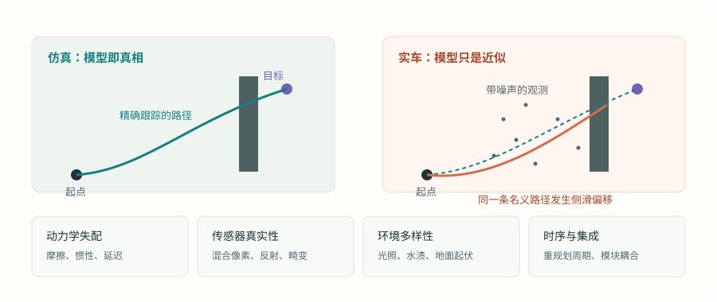
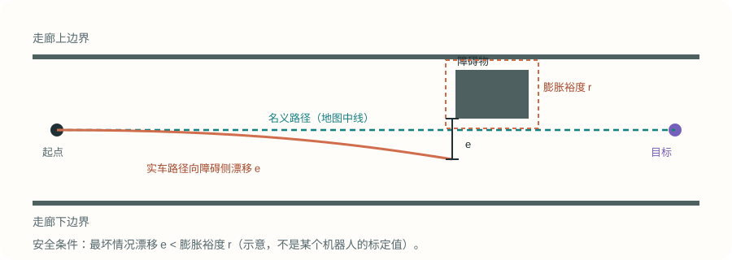

仿真到实车部署：仿真里完美的规划器，为什么一到实车就失手
同一套规划器，仿真里路径平滑、避障灵敏，装到实车上却擦碰、急停、跑偏。这不是某一处 bug，而是模型与世界之间的系统性差距——“reality gap”。它无法被彻底消除，只能被度量、被预留、被持续管理。
仿真里完美，实车为何失手
设想一个只在仿真里验证过的规划器：它拿到精确的栅格地图、无噪声的位姿、理想的运动学，于是它敢让路径贴着障碍物 2 cm 通过，敢在转角处保持高速。换到实车，同样的代码立刻出问题——路径偏移几厘米就擦上障碍，速度环跟不上规划的速度就在转角处抖动，最后触发急停。
问题不在算法本身。仿真里的规划器隐式依赖了三件在现实中并不成立的事：地图是精确的、位姿是精确的、动力学是它所假设的那一种。这三条任何一条被打破，规划与执行之间就出现缺口。机器人学习领域把这种“仿真中有效、现实中失效”的系统性差异称为 reality gap（现实鸿沟），这一说法可追溯到 Jakobi、Husbands 与 Harvey 在 1995 年对“仿真中的进化机器人为何到现实就退化”的讨论。
关键认识是：reality gap 不是一次性的 bug，而是两个概率分布的偏移。仿真定义了一个（动力学、传感器、环境）参数的分布，真实世界定义的是另一个。你在前者上训练的规划或策略，放到后者上就处在训练分布之外。要缩小它，只能靠让训练分布覆盖更多的“假现实”（域随机化），以及在决策里显式预留不确定性的空间（鲁棒规划）。
鸿沟的四个来源
把 gap 拆开看，它主要来自四类差异。分开理解的价值在于：不同类型的差异，对应的对策也不同。
DEPLOYMENT · 25

动力学失配
仿真用的摩擦、惯性、回差、轮胎形变都是对真实物理的近似。你在仿真里规划出的曲率，假设机器人能以某个速度沿它转弯；但真实轮胎在地毯与瓷砖上的摩擦系数可能相差很大，转弯时发生侧滑。单次侧滑也许只有几毫米，但连续多个转弯后偏差会累积成可观的横向误差。
传感器真实性
仿真中的激光雷达常返回精确的射线—面片交点。真实点云包含混合像素（一个脉冲打在物体边缘）、反射率导致的测距偏差、以及扫描过程中的运动畸变。规划器若在“干净”数据上调到极致，面对真实点云反而更容易误判。
环境多样性
仿真环境往往只有有限场景。真实世界有阳光直射导致视觉过曝、地面水渍造成激光噪点、地毯边缘带来颠簸。这些“小事”叠加，足以让最精巧的规划器失效。
时序与系统集成
感知、定位、规划、控制各模块的周期与延迟并不对齐。定位以较低频率更新、重规划以另一周期触发，两者之间的相位差会把一次微小的位姿跳变放大成路径级的偏差。这类问题仿真几乎无法预测，因为它出现在模块之间，而非模块之内。
传感器噪声建模
从仿真走向实车的第一步，是承认规划器拿到的不是真值。三类常见传感器的误差性质很不一样，混淆它们会导致错误的鲁棒性假设：
- 激光雷达（LiDAR）：单次测距误差近似独立，量级小（厘米级），但存在系统性偏差与偶发丢点、混合像素。多次扫描不能在时间上简单地“平均掉”系统性偏差。
- 里程计（Odometry）：误差随里程累积。每一小段位移的比例误差与偏置会不断叠加，因此几十米后位置估计可能严重偏离真值。这是与 LiDAR 最本质的区别。
- 全球定位（GPS）：大部分时间误差有界，但会偶发多径导致的大幅“跳变”，以及信号丢失。跳变是离群点，不是高斯尾巴。
在规划层面，最需要盯住的是里程计的累积性。用一个只保留“横向误差随里程线性累积”这一效应的简化模型表示：
其中 e 是横向位置误差（单位 m），D 是已行驶里程（单位 m），k 是无量纲的比例系数。量纲约定：k 没有单位，表示“每米里程积累多少米横向误差”。真实系统里误差并非严格线性，但线性模型足以说明“误差随里程增长”这个决定性的定性事实，下一节的可运行示例就建立在它之上。
域随机化
既然无法让仿真等于现实，一个策略是反过来：不要只训练/调参在一个“特定的假现实”上，而是让训练分布覆盖很多个“假现实”。这就是 Tobin 等人 2017 年提出的域随机化（domain randomization）：在仿真里随机化物理与传感器参数，使模型在真实世界中更鲁棒——其哲学是“见过足够多的假现实，就不会被某一个特定的假现实误导”。
典型的随机化对象包括：
- 物理参数：质量、摩擦系数、阻尼、电机延迟；
- 传感器参数：噪声标准差、采样频率、丢包/丢点率；
- 环境参数：光照强度、地面纹理、障碍物位置；
- 执行器参数：最大速度、最大力矩、响应延迟。
随机化不是万能的。第一，它只保证你在仿真中见过的分布被覆盖，真实世界的参数若落在该分布之外，鲁棒性依旧不成立；第二，随机化区间过宽会让模型在仿真内变差（“学一个大而无用的策略”），区间过窄又覆盖不到现实。区间如何选，本身又是一个需要实验回答的问题。
鲁棒规划与安全裕度
即使不做完整的域随机化，也可以在规划器里显式预留不确定性。核心思路是：当误差无法被精确消除时，就用空间与速度上的余量把它“装住”。
- 安全裕度（障碍膨胀）：在代价地图上把所有障碍物向外膨胀一个半径
r，使规划出的路径与真实障碍保持距离。ROS 2 Nav2 的 costmap 即通过 inflation layer 实现这一点。 - 不确定性感知的代价：把定位协方差并入代价——不确定性越大的区域代价越高，机器人自然倾向绕开“看不清”的地方。
- 保守的速度规划：靠近障碍或转角时主动减速；理想路径贴着障碍边缘通过，在加上执行器延迟与定位误差后往往等同于危险。
- 频繁重规划：不要指望一次规划管到底；以固定周期重规划，让系统能持续纠正偏差。
膨胀的对象也不是“点”。如果规划器把机器人当成一个点，它就会低估车体扫过的区域；工程上通常先用足迹描述车体外形，再在其上叠加膨胀裕量，两者的作用并不相同。
DEPLOYMENT · 25

DEPLOYMENT · 25

r 的作用是把未建模的横向漂移 e 装进安全边界。工程上可用的安全条件是最坏情况漂移 emax < r；前式 25-1 给出 e 随里程的增长，因此走廊越长，所需的 r 也越大。图中不给出标定数值。把这两个量写在一起看：由式 25-1 有 e_max = k · D，安全条件变成 k · D < r。它给出了一个很有用的工程结论——要么减小比例误差 k（更好的标定/滤波），要么缩短单段里程 D（更频繁重规划），要么加大膨胀半径 r。三者都是可操作的口子，而不是玄学。
交互：裕度与漂移的量级比较
固定膨胀裕度 r = 0.30 m、单段里程 D = 20 m，只改变比例误差 k。切换两个按钮，看 20 m 处的横向漂移 e = k·D 是否越过裕度。这正是“同一套参数，换一类地面就从安全变成危险”的几何直观。
k = 0.01 /m：e = 0.20 m < r = 0.30 m，仍存余量。
数值属教学示例；真实系统的 e 不一定随里程严格线性。
可运行的漂移累积示例（Python 3.10+）
下面把“裕度能否装住漂移”写成一个确定性例子：同样 20 m 里程，比例误差从 1%/m 变成 2%/m，横向漂移就从 0.20 m 跳到 0.40 m，而 0.30 m 的膨胀裕度刚好被跨过。存成 gap_demo.py，运行 python3 gap_demo.py，断言应当通过。
import math # Python 3.10+
# 教学示意模型：横向误差随里程线性累积 e = k * D，
# 只保留“误差随里程增长”这一效应，不是具体机器人的标定模型。
def lateral_error(distance_m: float, k: float) -> float:
return k * distance_m
R = 0.30 # 障碍膨胀裕度 (m)
D = 20.0 # 单段行驶里程 (m)
e_small = lateral_error(D, 0.01) # 1% 每米
e_large = lateral_error(D, 0.02) # 2% 每米
assert math.isclose(e_small, 0.20)
assert math.isclose(e_large, 0.40)
assert e_small < R < e_large # 同样 20 m，k 翻倍就从安全变成危险
print(f"k=0.01: e={e_small:.2f} m < r={R:.2f} m -> 安全")
print(f"k=0.02: e={e_large:.2f} m > r={R:.2f} m -> 进入碰撞区")
# 输出：
# k=0.01: e=0.20 m < r=0.30 m -> 安全
# k=0.02: e=0.40 m > r=0.30 m -> 进入碰撞区
这个例子只证明“线性累积下裕度会被跨过”这一点，它不预测任何真实机器人的误差。断言固定了全部输入因此可复现；真实标定应报告多类地面、多个种子下的 k 分布，而不是把一次测得的常数当成通用值。
边界条件
- 裕度不是越大越好：膨胀半径过大会把本来可通行的窄通道堵死，或让系统无解。裕度是一个安全性与通过性的权衡，不能无限调大。
- 域随机化的区间本身需要证据：区间过宽会让策略在仿真内变差，过窄则覆盖不到现实；选定区间后应用一批区间外的真实场景做留出测试。
- gap 不能被证明为零：你只能报告“在测试过的场景集上未发生碰撞”，不能声称系统在所有现实中安全。没有测试场景清单的“鲁棒”没有意义。
- 时序耦合容易被忽略：定位频率与重规划周期不匹配会把微小的位姿跳变放大成路径级偏差，这一点在仿真中几乎观察不到。
- 安全条件只对假设成立：式 25-1 的线性关系是假设，不是定律；若误差随里程超线性增长（如长时间积分漂移），则需重新标定
k。
不要把“仿真里跑通”当成“实车可用”的证据。一个可交付的结论至少应包含：测试场景清单、传感器与动力学误差的标定范围、安全裕度的取值依据，以及未执行的测试项。
从仿真到现场不应是一步到位。更可操作的做法是把证据分成逐级累积的门禁，每一级通过才允许进入下一级。
DEPLOYMENT · 25

原始来源
- Jakobi, Husbands & Harvey (1995), Noise and the Reality Gap: The Use of Simulation in Evolutionary Robotics, ECAL 1995——“现实鸿沟”一词的出处：仿真中有效、现实中退化的系统性差异。
- Tobin et al. (2017), Domain Randomization for Transferring Deep Neural Networks from Simulation to the Real World, IROS——域随机化的原始工作。
- ROS 2 Nav2 官方文档——costmap 的 inflation layer 与代价地图分层；版本以 Nav2 文档首页为准。
- 本章式 25-1、四幅图与 Python 示例均为教学示意，不是任何具体机器人平台的标定数据。